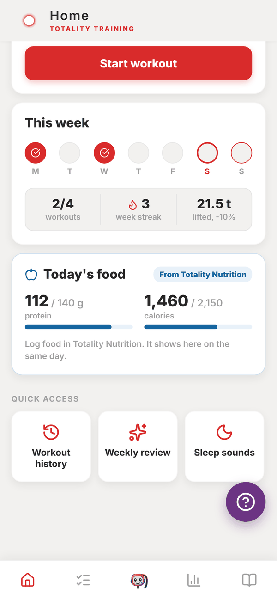
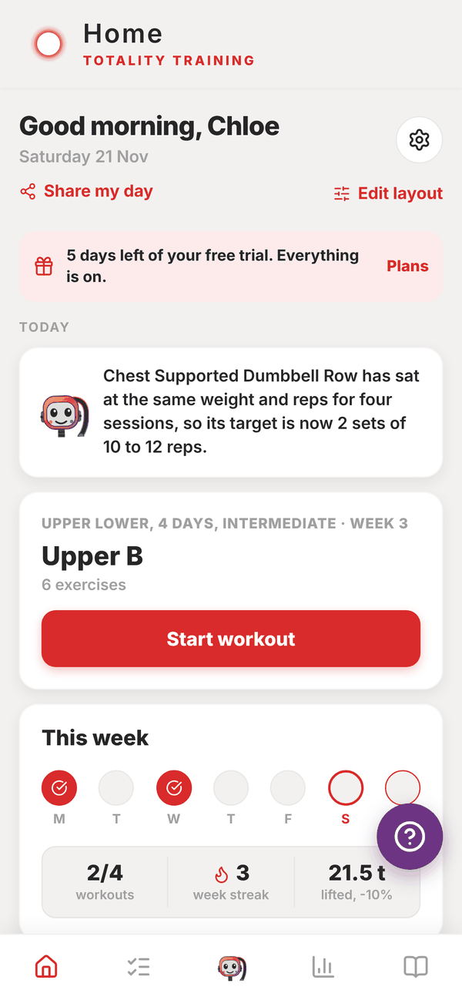

Totality Training guide
Home
Today's workout, your week, Tali's note, today's food and Quick access, all on one screen.
Home is where you start each day. It shows what to do today and how the week is going.


What is on Home#
- The greeting and the gear. The gear at the top right opens Settings.
- Share my day makes a picture of your day to share. Edit layout lets you move or hide the cards.
- The trial banner shows how many days of your free trial are left. Tap Plans to see the plans.
- Tali's note. One line from Tali about today: a weight that goes up, a rest day, or what is left this week. It costs no credits.
- Today's workout. The programme, the week you are on and today's workout. Tap Start workout. On a rest day it shows the next workout, and you can do it today instead.
- This week. A dot for each day: filled red when done, a red ring when a workout is still to come. Below it: workouts done this week, your week streak and how much you lifted compared with last week.
- Today's food. Shown when you use Totality Nutrition on the same account: protein and calories against your targets. See With Totality Nutrition.
- Quick access. Workout history, Weekly review, Rep max calculator and Sleep sounds. The calculator is explained on Progress.
When a lift stalls or a workout keeps getting missed#

If the same weight has not moved for four workouts, Tali's note on Home says so and tells you the new rep target. If the same workout has been missed three weeks running, she suggests moving your training days or picking a programme that fits your week. See How your weights and sets adjust.
Questions#
I do not see Today's food.
It shows when your account also uses Totality Nutrition and Today's food is switched on in Settings, Totality Nutrition.
Can I train on a different day than planned?
Yes. Tap the workout on Train and start it any day. On a rest day, Home offers to do the next workout today instead.